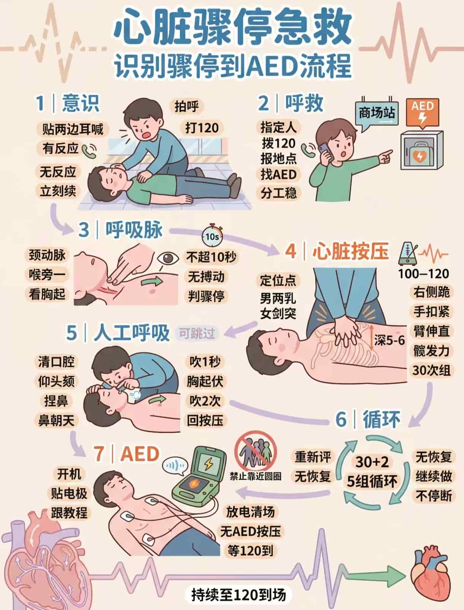
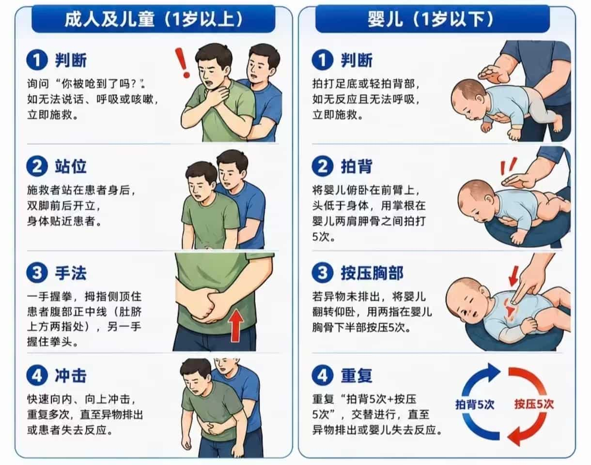
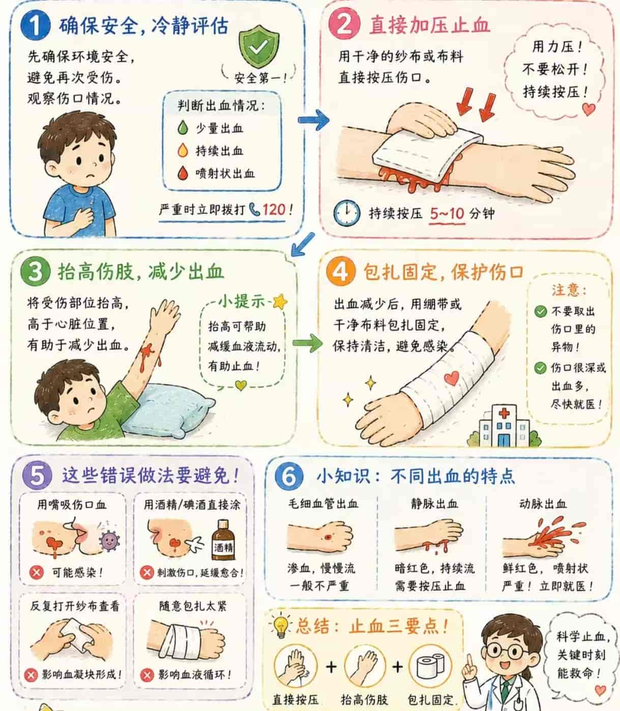

首页 / 科普资源库
三大保命技能 + 航空特色避险 —— 每一项都配"分步图解 · 教学短视频 · 常见误区"
用于无反应、无正常呼吸的成人。判断快、按压深、中断少，是救回来的关键。
大别山革命时期，刘名榜在无医无药的深山里，用胸外按压、人工通气抢救重伤战友； 许世友将军在冲锋中第一时间处置倒地的战友，以分秒必争的行动守护生命。
→ 这就是"黄金救援 4 分钟"的战场版本：心脏骤停后越早开始按压，救回来的机会越大。
轻拍双肩、大声呼唤；同时观察胸廓起伏 5~10 秒，判断是否有正常呼吸。
立刻拨打 120 并开启免提，指定专人去取 AED（自动体外除颤器）。
两乳头连线中点（胸骨下半段），双手交叠、手臂垂直，深度 5~6cm，频率 100~120 次/分，每次充分回弹。
仰头抬颏法打开气道，清除口腔内可见异物（不要盲目往深处掏）。
捏鼻、包住口唇，吹气约 1 秒至胸廓抬起；按压与吹气比例为 30:2。
AED 到位立即开机，按语音提示贴片、放电，放电后马上继续按压，不要等待观察。

视频无法播放：videos/skills/cpr.mp4 不存在，或编码不是浏览器支持的 H.264 + AAC（手机/剪辑软件常导出 H.265/HEVC，网页放不了）。转码方法见 videos\README.txt。
用于气道异物梗阻。先分清"能咳嗽"与"咳不出声"，两者处理方式完全不同。
革命老区物资匮乏，老人与儿童容易发生异物卡喉。红军战士用腹部冲击的简易方法救助乡亲 —— 这正是海姆立克急救法的"红色雏形"。
→ 守护老区"一老一小"：一个动作、三秒救急。
双手掐喉、说不出话、咳不出声、面色发紫 —— 属于完全梗阻，必须立即施救。
不完全梗阻时鼓励其用力咳嗽，全程守在旁边观察，不要拍背乱拍、不要喂水。
施救者站在其身后，一腿插在其两腿之间防摔倒，让其上身稍向前倾。
一手握拳，拳眼抵在肚脐上方约两横指、剑突下方（肋骨下缘中间的空软处）。
另一手包住拳头，快速向内向上方冲击，每次约 1 秒，反复进行直到异物排出。
1 岁以下婴儿：拍背 5 次 + 胸部冲击 5 次交替；孕妇或肥胖者：改做胸部冲击；独自一人：用椅背、桌沿自我冲击。

视频无法播放：videos/skills/heimlich.mp4 不存在，或编码不是浏览器支持的 H.264 + AAC（手机/剪辑软件常导出 H.265/HEVC，网页放不了）。转码方法见 videos\README.txt。
用于外伤出血。核心只有一句话：直接压迫、持续按压、不要老揭开看。
土地革命战争时期，许世友在鄂豫皖苏区反"围剿"战斗中腹部中弹，伤口深、流血不止， 战场混乱、医护无法及时赶到，他靠四步完成自救：
→ 战地自救法升级为航空标准：按压止血 → 规范包扎 → 妥善固定 → 尽快转运，老少易学易用。
确认现场安全，戴手套或用干净塑料袋隔离双手，充分暴露伤口。
用无菌敷料或干净布料直接压住出血点，持续按压 5~10 分钟，中间不要松开。
绷带自远心端向近心端缠绕，松紧以能插入一根手指为宜。
四肢出血在包扎后抬高至高于心脏水平，有助于减少出血。
四肢大出血且压迫无效时使用，扎在伤口近心端 5~10cm 处，必须记录时间并尽快送医。
出现发紫、发凉、麻木提示包扎过紧，需立即重新包扎。

视频无法播放：videos/skills/bandage.mp4 不存在，或编码不是浏览器支持的 H.264 + AAC（手机/剪辑软件常导出 H.265/HEVC，网页放不了）。转码方法见 videos\README.txt。
客舱安全训练里有一套非常成熟的标准动作 —— 撤离讲秩序、密闭空间讲判断、人群聚集讲自救、 包扎讲规范。这些技能挪到地面场景（大巴、电梯、商场、集会、田间地头）同样管用， 这正是本项目"20% 航空特色"的部分，也是我们区别于普通急救科普的地方。 每一项都能接上大别山红色故事：红军突围转移时的有序撤离、深山救护时的规范包扎。
记住离你最近的出口隔几排、有几个出口 —— 烟雾中视线差，靠记忆而不是靠眼睛找。
听到撤离指令马上行动，不要犹豫、不要等别人先动。
拿行李会堵住通道、划破滑梯，是撤离中最致命的错误之一。
烟雾中俯身贴地呼吸，沿通道快速移动但不推挤。
双臂交叉抱胸、双腿并拢、身体前倾下滑；落地后立即起身向前快跑，不要停留。
逆风远离飞机或车辆，不返回取物、不围观。
进入机舱、电梯、大巴、影院等密闭空间，先确认最近出口与疏散通道位置。
氧气面罩脱落时，先给自己戴好，再帮助身边的儿童或老人 —— 先自保才能救他人。
弯腰低头、双手抱头或紧抓前方椅背，双脚踩实地面，减少冲击伤害。
低姿匍匐、用湿布掩住口鼻；开门前先用手背试门把手温度，发烫不要开门。
服从机组与工作人员指令，不擅自行动，不把行李放在通道上。
人流突然静止、出现明显推挤、有人呼喊或摔倒 —— 这时就要立刻做防护动作。
尽量不倒地。双臂交叉抱住胸前，为自己留出呼吸空间；或双手护住太阳穴与后颈。
顺着人流方向斜向移动，寻找墙角、柱子等坚固掩体，不要逆行、不要推挤他人。
手机、鞋子掉了都不要弯腰，弯腰瞬间极易被推倒。
侧卧、双手抱头护住头颈，蜷缩身体，尽量靠近墙角或坚固物，等到人流稍缓再起身。
航空客舱急救要求"动作标准化、低容错"，以下技法源自客舱急救训练，同样适用于家庭与田间地头。
适用于腕、踝、肘、膝等关节：以关节为中心交叉缠绕成"8"字，松紧以能插入一指为宜。
适用于头顶外伤：三角巾底边置于前额，顶角向后覆盖头顶，两底角经耳上绕至枕后交叉、打结固定。
适用于粗细不均的肢体（前臂、小腿）：每圈反折一次，反折点对齐成一条线，覆盖均匀不松动。
骨折或疑似骨折时，就地取材（木板、硬纸板、毛巾卷）固定伤处上下两个关节，固定后检查末梢循环。
疑有脊柱损伤者严禁随意搬动；一般伤者可用双人扶行、椅式搬运或平托搬运，动作同步、保持平稳。
密闭空间缺氧时优先使用氧气面罩（先自己后他人）；AED 到位后按语音提示贴片、放电，放电后立即继续按压。